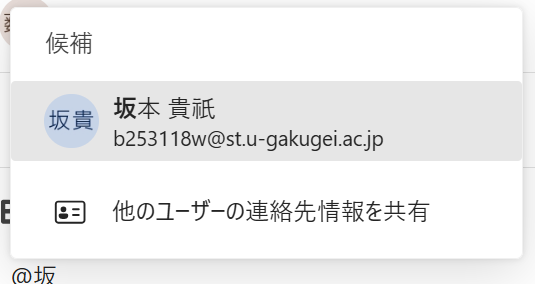
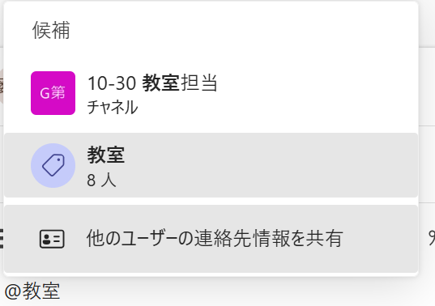
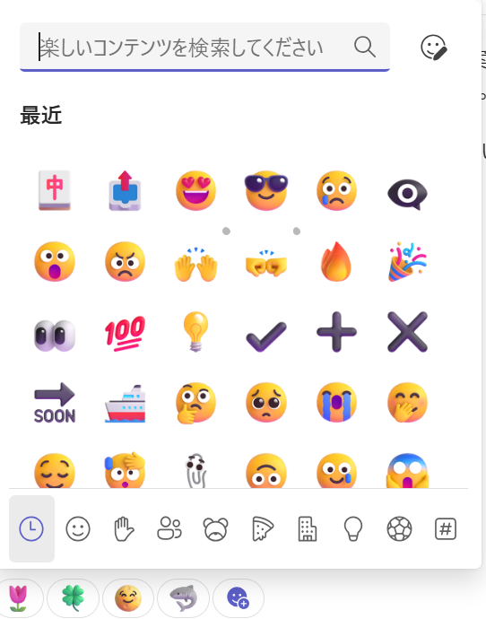
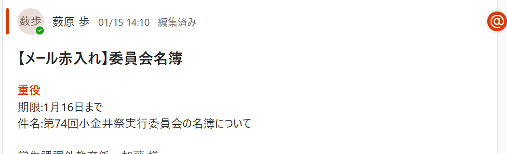
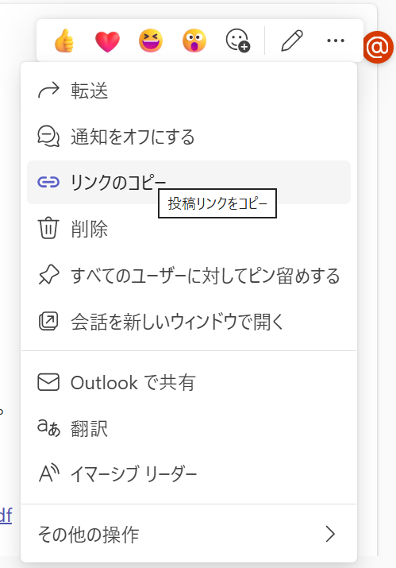
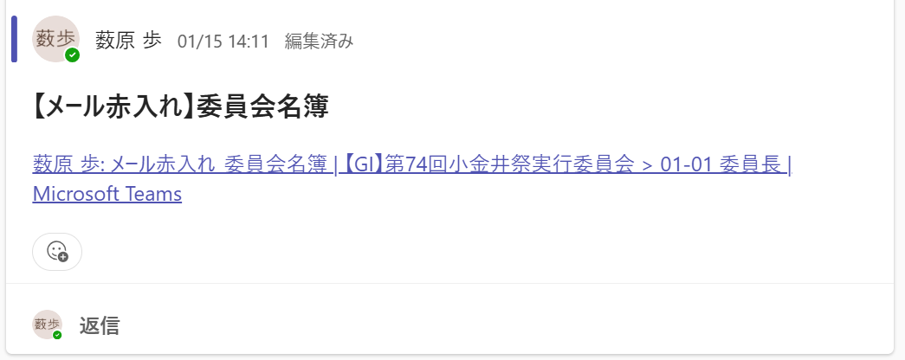
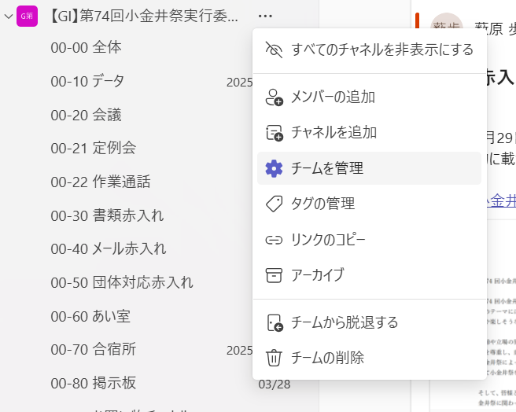
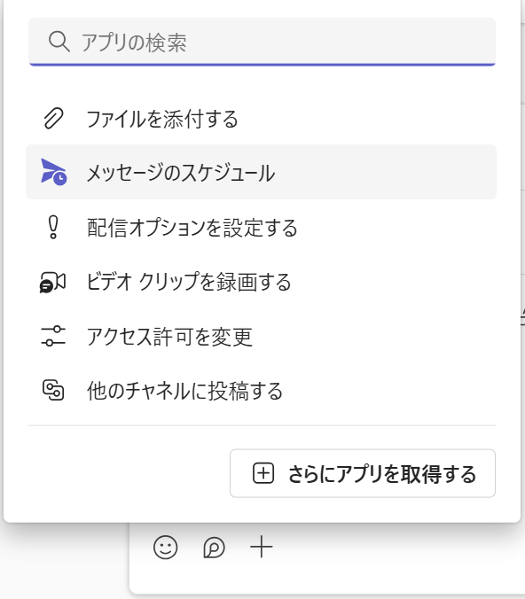
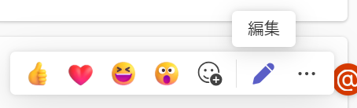
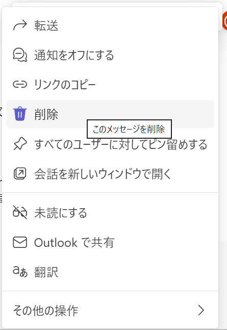

🆘 困ったときはどうすればいい？
「どのチャネルに投稿すればいいか本気で迷った」「マニュアルにないトラブルが起きた」…そんな時は焦らなくて大丈夫！
まずは直属の担当長や局長に気軽に質問してください。みんな最初は初心者です！
Teamsの使い方がよくわからなくて不安よな。委員長動きます。
日常生活ではあまり馴染みのない、Teamsや委員会活動ならではの用語をまとめました。
学祭委員会の略です。私たち小金井祭実行委員会のこと。
小金井祭本番のこと。
第74回小金井祭は10月31日(土)～11月2日(月)です。
2年生のこと。執行代です。
1年生のこと。フレッシュ。
委員長、副委員長、財務、団体局長、管理局長、広報局長、企画局長の7人で構成される、いわゆる幹部です。
3年生、4年生の方々。本祭期間中に夜間警備をしてくれます。
委員会全体で週に一回行われる会議のこと。重要な決定事項が共有されるため、原則として参加が必要です。
「参加団体責任者会議」の略称。主にGIから小金井祭に参加する全団体に連絡等を行う会議のこと。だいたい月に一回のペースで行われ、動員があります。
仮企画書と本企画書のこと。各団体はこれを基に企画を実施します。
会議をスムーズに進行するための資料のこと。議題などが書かれており、会議の前に共有されます。
「日程調整」の略。会議や作業の日にちを決める作業のこと。TeamsではなくLINE等のツール（調整さんなど）で行うことが多いです。
サークル棟4階の一番奥にある、GIの部室のこと。使用する場合は00-60 あい室チャネルで予約が必要です。
夏休み頃から使用可能になるGIの主な作業場所。課外から特別な許可を得て使用するため、外部への情報漏洩は絶対に厳禁です。00-70 合宿所チャネルで予約が必要です。
GIの物品を保管する場所です。
大学の学生課のこと。窓口はS棟の2階にあります。文化祭を開催するにあたり、様々な書類の提出や許可取りを行います。
GIのマスコットキャラクター。かわいい。
もえたの妹。決して彼女ではない。かわいい。
Teams内にある「話題ごとの部屋」のこと。GIでは00-00 全体など、目的や局ごとに細かく部屋（チャネル）を分けて情報を整理しています。
Teams等のチャネルにメッセージや資料を書き込むこと。GIでは重要な決定事項や業務連絡は、LINEではなく必ずTeamsの適切なチャネルに「投稿」して全体に共有します。
「@名前」の形で特定の相手を指定し、直接通知を飛ばす機能。相手に確実に読んでもらう（確認漏れを防ぐ）ための必須テクニックです。
他の人の投稿に対してスタンプを押す機能。GIでは「内容を読み、把握しました」という確認の合図として機能するため、メンションされたら必須の行動です。
自分が作成した文章や書類を、他のメンバー（上級生や重役など）に確認・添削してもらう作業のこと。期限を設けて依頼し、承認されてから外部へ送信・提出します。
気になる系列（局）をタップしてください。
全体に関することを投稿するチャネルです。
人員の動員やスケジュールなどを投稿します。絶対に見逃さないようにしましょう。
このチャネルでは基本的に投稿はしません。担当長等は完成した書類等を該当するファイルにアップロードしてください。
執行代会議等の会議の日程や議題、レジュメ等を投稿します。絶対に見逃さないようにしましょう。
定例会の会議日程や議題、レジュメ等を投稿します。絶対に見逃さないようにしましょう。
きっと今お仕事しているのは私だけじゃないはず。一人は寂しいよね。お仕事だけでなく、雑談用に使っていただいても構いません。気軽に使おう。
課外や参加団体等に提出する書類の赤入れ投稿をします。ここには該当チャネルの投稿リンクのコピーを投稿してください。
メインで使用するメールから送信、返信する文章の赤入れをします。ここには該当チャネルの投稿リンクのコピーを投稿してください。
団体から来た質問等の対応文章の赤入れ投稿を管理します。ここには該当チャネルの投稿リンクのコピーを投稿してください。
こうなったらいいなこうしたいなを形にするための場所です。
マニュアル関連にお買い物チャネルマニュアルがあります。
協賛の契約等で発生した交通費を管理します。
委員会費についてのお知らせを投稿します。
委員長副委員長連携担当に関することを投稿します。
あい室を使用するときに投稿します。一般通過GIに聞かれたくない極秘事項を話し合うときや、zoom会議などを行うときは予約しましょう。
合宿所を使用するときに投稿します。
団体局に関するチャネルです。00では局全体に関すること、それ以外では各担当に関することを投稿します。
管理局に関するチャネルです。00では局全体に関すること、それ以外では各担当に関することを投稿します。
広報局に関するチャネルです。00では局全体に関すること、それ以外では各担当に関することを投稿します。
企業からの連絡の対応を行います。
協賛で使用するメールから送信、返信する文章の赤入れを投稿します。ここには直接赤入れを行う文章を投稿します。
Twitter(現X)やInstagramに投稿する文章等の赤入れを投稿します。ここには直接赤入れを行う文章等を投稿します。
基本的には公式SNSのDMに届いた他大学からの連絡内容を投稿します。
HPを介したお問い合わせが流れてきます。
企画局に関するチャネルです。00では局全体に関すること、それ以外では各担当に関することを投稿します。
財務に関するチャネルです。
00-80 掲示板チャネルの募集によって集まった有志によるチャネルです。内容が終了し次第データを記録してチャネルは削除されます。
委員会として活動する上で、必ず守らなければならない大前提です。
LINE等を使用するのも問題ありませんが、その場合はTeamsにも必ずその内容を投稿してください。全体に見える位置で情報共有とその把握を行うことで、担当、局長間などの連携の強化することが目的です。
日調等はTeamsを使わなくてもOKです！
緊急事態でない限り、Teams, LINE等では上記の時間に投稿、リアクションは行わないでください。



データを遡りやすくするために、一つの話題で何度も投稿しないようにしましょう。返信欄を使おう！
書類やメールのチェックをお願いする時のルールです。
まずは以下のフォーマットに従って、対象のファイルや文章を投稿します。

投稿後は、その投稿のリンクをコピーし、該当する赤入れチャネルにリンクのみを貼りつけて投稿してください。こうすることで、過去の赤入れ文章を探しやすいようになります。
投稿に触れ、右上の三点リーダー（その他のオプション）をクリックすると上のようになります。「リンクのコピー」を選択してください。

00-30 メール赤入れなどの専用チャネルに、さっきコピーしたリンクを貼り付けて投稿します。

メール赤入れ、団体対応赤入れ等については、相手に送信後、もしくはスケジュール送信をした後に、該当のメッセージに下のリアクション（スタンプ）をつけてください。これにより、送信完了状態を視覚化します。
書類を一括管理し、円滑にお仕事をするためにご協力ください。すこし面倒くさいかもだけど頑張りましょう。
必須ではありませんが、知っておくと圧倒的に便利な技を紹介します。
全てのチャネルを表示したままだと、大切な連絡が埋もれてしまいます。最初は00系列のチャネルと自分の所属する担当に関係するチャネルだけを表示しておくのがいいでしょう。興味があれば様々なチャネルを表示してみると面白いかもしれません。
Teams名(【GI】第74回小金井祭実行委員会)の横の「…」から「チームを管理」を開くと設定できます。

夜中にお仕事が捗っても、これを利用すれば送信時間を指定できるため、健康人間を装うことができます。（必須ではありませんが、夜間作業に便利なテクニックです）
投稿画面の左下の ＋ をクリックし、「メッセージのスケジュール」を選択してください。

日時を選択して送信をクリックしたら完了です。
新しい投稿をする時は「Enter」で改行できますが、誰かの投稿に「返信」する時は、普通にEnterを押すと途中で送信されてしまいます。返信欄で改行したい時は、必ず「Shift」を押しながら「Enter」を押してください。（スマホアプリは右下の改行ボタンでOKです）
ちなみに設定/チャットとチャネル/メッセージ書き込み時の Enter キー の動作 で返信欄でも「Enter」で改行するだけにすることができます。
編集

削除
